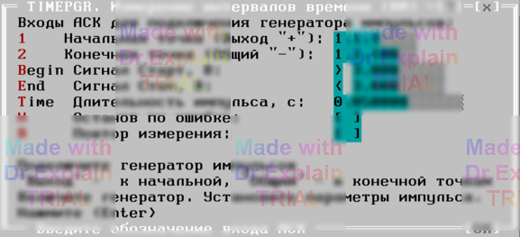
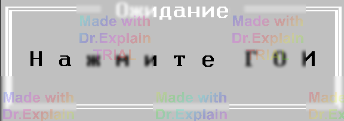

4.11 TIMEPGR. Измерение интервалов (КИ)
Утилита определяет погрешность измерения длительности временных интервалов (импульсов) с помощью АЦП. Предоставляется меню (см. рисунок 1).

Параметры меню
- «Начальная точка» — вход АСК, к которому подключается «Выход» генератора одиночных импульсов (далее — ГОИ).
- «Конечная точка» — вход АСК для подключения «Общего» вывода ГОИ.
- Четыре опции «Сигнал Старт» и «Сигнал Стоп» задают параметры импульса, формируемого ГОИ (полярность, уровень и т.д.).
- «Длительность импульса, мс» — длительность импульса, задаваемая на ГОИ.
Установите на ГОИ требуемые параметры импульса. Подключите ГОИ: «Выход» — к начальной точке, «Общий» — к конечной точке.
Подготовка к выполнению
- Начальная точка подключается к шине A1.
- Конечная точка подключается к шине B1.
- Устанавливается расчётный режим АЦП.
- АЦП подключается к шинам A1 (вход) и B1 (общий).
- На экран выводится приглашение (см. рисунок 2).

Нажмите кнопку «ГОИ» (генерация импульса) на генераторе одиночных импульсов.
Результаты измерения
Производится измерение, и в протокол выполнения выводятся сообщения вида:
$VAL tдо=499.98мс $TST1 tд.б=50мс+-1.5мс (3.00%) tизм=49.98мс Погр=-20мкс $TST1 Измерений:1 Все норма ПОГРmin=-20мкс ПОГРmax=0
После завершения предоставляется меню (см. п. 6.3).